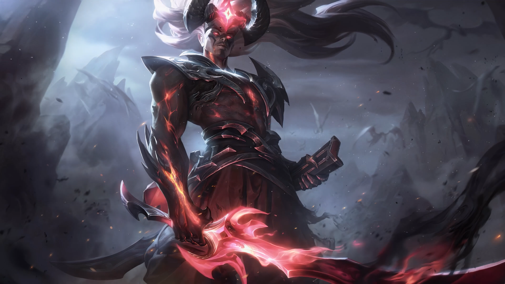
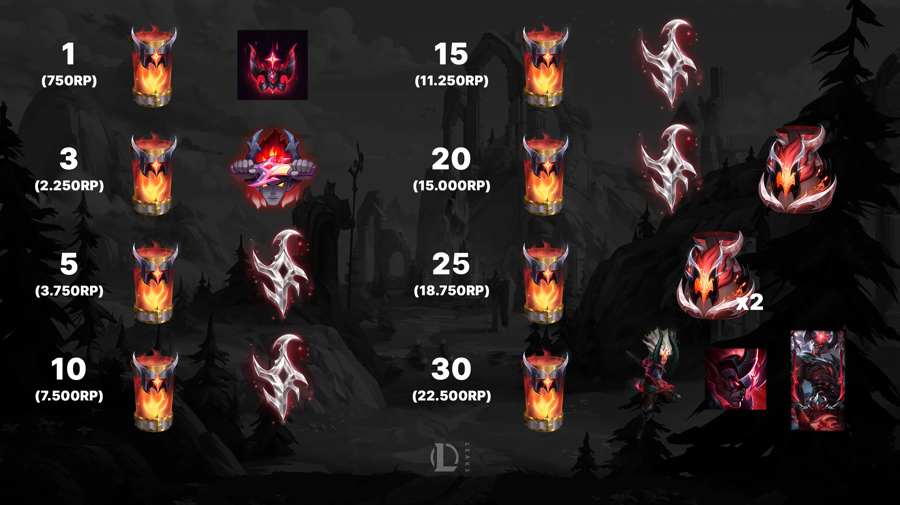

LoL Genesis Nightbringer Yasuo Skin & Capsule Milestones Genesis Nightbringer Yasuo Skin is the newest League of Legends. Here's how you can get it, as well as the rest of the Capsule Milestone Opening Rewards.
Oct 7, 2024 5:08 PM by Gerry Minkova
Riot Games is back with another extra special and expensive skin. This time around Yasuo will be getting the new exclusive Mythic Variant. The Genesis Nighbringer Yasuo skin will make it's debut in the next League of Legends patch but it won't be easy to add him to your collection. Here's everything you need to know.
Some LoL fans won't be happy to hear that the only way to get this Yasuo skin in LoL is through capsules and capsule milestones, similar to the New Anima Squad Miss Fortune skin, as well as Divine God-King Darius and Fallen God-King Garen.
The Genesis Nightbringer Yasuo will be live in League of Legends on October 9th. Stay tuned!